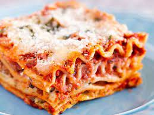

Anabolic Meat Lasagna

Description
Anabolic Twist to the classic homemade lasagna
Nurition per serving
- Calories: 340
- Fat (g): 10
- Carbs (g): 25
- Fiber (g): 5
- Protein (g): 30
Ingredients (6 servings)
- 2 cans (28 oz) Pa/mini low carb lasagna
- 8 slices fat-free cheese (or 152g shredded fat-free cheese) (240 calories)
- 500g frozen spinach, thawed and drained
- 250g zucchini, sliced lengthwise
- 455g low-fat ricotta cheese
- 455g 93% lean ground turkey/chicken (measured raw)
- 1000g (4 cups) offlavoured pasta sauce of choice (up to 50 calories per 125g)
- 125g onion, diced
- 2 tsp minced garlic or 2 garlic cloves, minced
- 80ml (½ cup) water
Steps
-
Pre-heat the oven to 400°F (204°C).
-
Saute garlic and onions on a pan over medium-high heat until
golden brown.
-
Remove the onions and garlic and set aside in a large bowl.
-
In the same pan, cook the lean ground turkey until fully cooked.
When fully cooked, remove from the pan, drain/rinse out any
excess liquid, and add to the bowl of onions & garlic.
-
Add pasta sauce to the turkey mixture and mix well.
-
In a separate bowl, mix Ricotta cheese and spinach.
-
Spray a casserole dish with cooking spray and build the lasagna.
Spread ¼ cup of the turkey sauce on the bottom of the casserole
dish. Place lasagna noodles over the sauce. Lay zucchini on top of
the noodles. Spread ½ of the ricotta cheese/spinach mix on top
of the zucchini. Spread ½ of the turkey pasta mix over the ricotta.
Repeat with another layer of lasagna noodles and zucchini. Spread
the remaining pasta sauce on top, and the place fat-free cheese
on top of that.
-
Cover with foil (spray with cooking spray) and place in the oven.
After 30 minutes, remove the foil and bake for another 30 minutes.
-
Let cool (20 minutes) before cutting and serving.
Return to HomePage